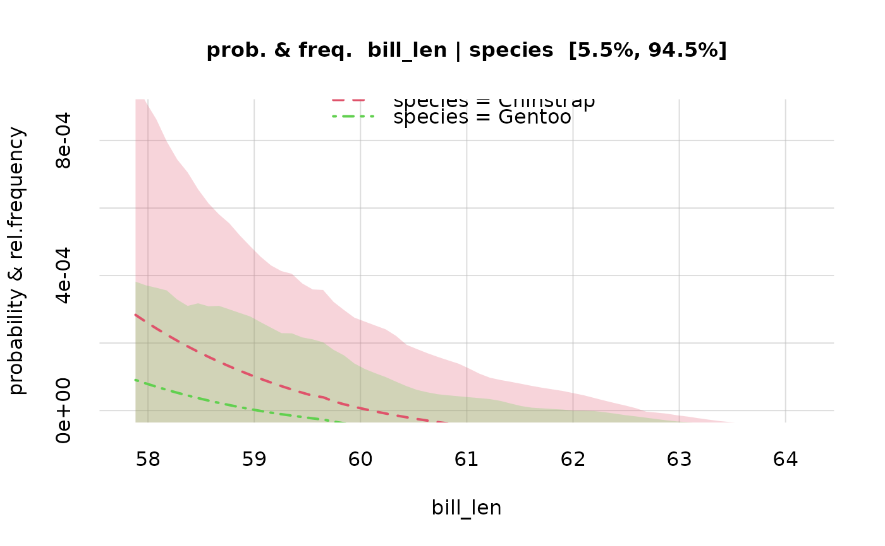

This function creates a set of values for a variate, based on the information from data and metadata stored in a learnt object, created by the learn() function. The set of values depends on the type of variate (nominal or continuous, rounded, and so on, see metadata). The range of values is chosen to include, and extend slightly beyond, the range observed in the data used in the learn() function. Variate domains are always respected.
Arguments
- vrt
Character: name of the variate, must match one of the names in the
metadatafile provided to thelearn()function.- learnt
Either a character with the name of a directory or full path for a 'learnt.rds' object, produced by the
learn()function, or such an object itself.- length.out
Numeric, positive (default 129): number of values to be created; used only for continuous, non-rounded variates (see
metadata).
See also
learn(), which generates the learnt objects required by vrtgrid().
Pr() to calculate probabilities and their variability.
plot.probability() to plot probabilities and quantiles calculated by Pr().
Examples
## Load the example `learnt` object calculated from the "penguins" dataset;
## variates: 'species' and 'bill_len'
learnt <- learntExample
## set of values for the variate "species";
## since this variate is of a nominal kind, all values are included
valuesSpecies <- vrtgrid(vrt = 'species', learnt = learnt)
print(valuesSpecies)
#> [1] "Adelie" "Chinstrap" "Gentoo"
## create a set of values for the variate "bill length";
## this variate is continuous and rounded, only realistic values are included
valuesBill <- vrtgrid(vrt = 'bill_len', learnt = learnt)
range(valuesBill)
#> [1] 27.5 64.2
## let's take a subset of these values, to speed up computation
valuesBill <- valuesBill[seq(to = length(valuesBill), length.out = 65)]
## calculate the conditional probabilities for the 'bill_len' values above,
## given the values of 'species'
probs <- Pr(
Y = data.frame(bill_len = valuesBill),
X = data.frame(species = valuesSpecies),
learnt = learnt, parallel = 1
)
#> Registered socket cluster with 1 nodes on host ‘localhost’.
#> Closing connections to cores.
## plot the conditional probability distributions, and their variability
plot(probs)
